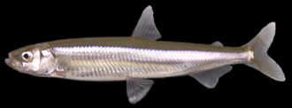

わかさぎの漁獲量 都道府県ランキング
全8都道府県の順位と漁獲量
わかさぎの漁獲量が全国で最も多いのは青森県で、229 tです。全国（603 t）の38%を占めます。

| 順位 | 都道府県 | 漁獲量 | 全国に占める割合 |
|---|---|---|---|
| 1位 | 青森県 | 229 t | 38% |
| 2位 | 秋田県 | 132 t | 22% |
| 3位 | 滋賀県 | 126 t | 21% |
| 4位 | 北海道 | 106 t | 18% |
| 5位 | 大分県 | 5 t | 0.8% |
| 6位 | 山梨県 | 2 t | 0.3% |
| 7位 | 神奈川県 | 1 t | 0.2% |
| 8位 | 長野県 | 1 t | 0.2% |
PR

わかさぎの漁獲量の推移（令和2年〜令和6年）
全国の漁獲量は、令和2年の935 tから令和6年の603 tへ、36%減りました。1位は入れ替わっています（令和2年は青森県、令和3年は秋田県、令和4年は青森県）。
| 年 | 全国 | 1位 | 2位 | 3位 |
|---|---|---|---|---|
| 令和6年 | 603 t | 青森県229 t | 秋田県132 t | 滋賀県126 t |
| 令和5年 | 641 t | 青森県273 t | 北海道126 t | 秋田県120 t |
| 令和4年 | 675 t | 青森県217 t | 秋田県202 t | 北海道134 t |
| 令和3年 | 687 t | 秋田県228 t | 青森県195 t | 北海道160 t |
| 令和2年 | 935 t | 青森県365 t | 北海道210 t | 秋田県207 t |
この数字について
- 分類：川や湖の魚
- 全国の漁獲量：603 t
- この数字が表すもの：漁獲量（河川・湖沼での漁獲量）
- 調査：内水面漁業生産統計調査（内水面漁業） 令和6年
- この品目は川や湖の統計です。
- 8県分を調査（調査していない県は順位に入りません）
わかさぎの漁獲量について、よくある質問
- わかさぎの漁獲量が日本一の都道府県はどこですか？
- 青森県です。内水面漁業生産統計調査（内水面漁業）（令和6年）で229 tでした。
- わかさぎの漁獲量ランキング2位・3位はどこですか？
- 2位は秋田県（132 t）、3位は滋賀県（126 t）です。
- わかさぎの漁獲量ランキング4位・5位はどこですか？
- 4位は北海道（106 t）、5位は大分県（5 t）です。わかさぎの全8県の順位は上の表のとおりです。
- わかさぎの全国の漁獲量はどれくらいですか？
- 603 t（令和6年）です。